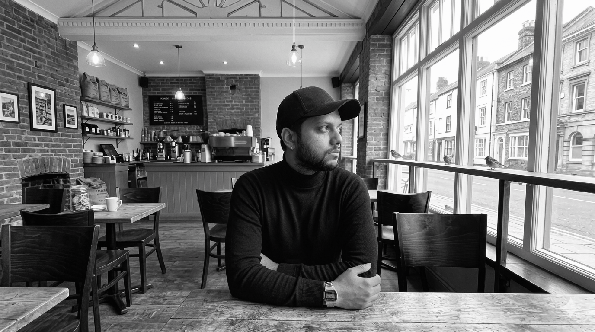

☀︎
Short thoughts, ideas, references...

I am a lifelong learner, currently exploring ideas and trying to understand both the world and the self more deeply. Still in the early stages of the journey, with a clear direction toward becoming an author, engineer, educator, and thinker built step by step over time.
There is a natural pull toward subjects that many tend to overlook. What appears ordinary or uninteresting often reveals depth when observed closely, leading to curiosity, questioning, and deeper exploration beyond the surface. This inclination toward depth is expected to shape the path in meaningful ways.
This phase of life is about exploring multiple interests while developing discipline, consistency, and clarity. The focus remains on steady progress and long term growth rather than quick outcomes or short lived results.
There is also a tendency to conserve energy, which brings a sense of intentionality in how time and effort are invested. Only what truly matters and carries lasting value is given priority. In simple term, I am Lazy.
Long term goals hold the highest importance, guiding where attention, energy, and effort are directed toward building something meaningful over time.
• DOB: 16th March
• Home town: Bengaluru
• Your AIR for NIT: AIR 2208
• Highest qualification: MTech Data Science
• Hobby: Reading, sleeping, creating
• Are you lazy? Yes
• Are you hardworking? Not sure, I always feel i can work harder.
• What is life according to you? Time pass between birth and death. Everyone have their own way of passing time.